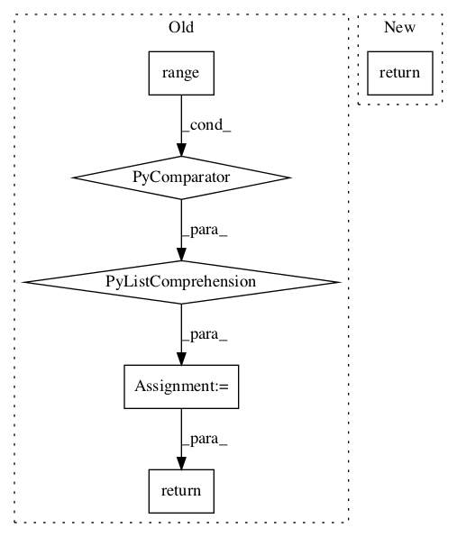

8a4468d2cd598beba09ddbb36f5b76d374d12dad,tensorflow_transform/beam/analyzer_impls.py,_MergeAccumulatorsCombineImpl,expand,#_MergeAccumulatorsCombineImpl#Any#,1007

Before Change
for i, output in enumerate(outputs):
yield beam.pvalue.TaggedOutput(str(i), output)
output_keys = [str(i) for i in range(self._num_outputs)]
outputs_tuple = (
pcoll
| "MergeCombinesGlobally" >> beam.CombineGlobally(
_CombinerWrapper(
self._combiner,
self._tf_config,
// TODO(b/34792459): Don"t set with_defaults. We set it to False
// for all combiners (even though QuantilesCombiner doesn"t need
// it to be set) as after combiner packing we will have a single
// combiner and want a consistent behavior.
is_combining_accumulators=True)).with_defaults(False)
| "ExtractOutputs" >> beam.FlatMap(
extract_outputs, self._num_outputs).with_outputs(*output_keys))
return tuple(outputs_tuple[key] for key in output_keys)
@common.register_ptransform(analyzer_nodes.CacheableCombinePerKeyAccumulate)
class _IntermediateAccumulateCombinePerKeyImpl(beam.PTransform):
After Change
def expand(self, inputs):
pcoll, = inputs
return (
pcoll
| "MergeCombinesGlobally" >> beam.CombineGlobally(
_CombinerWrapper(
self._combiner,
self._tf_config,
// TODO(b/34792459): Don"t set with_defaults. We set it to False
// for all combiners (even though QuantilesCombiner doesn"t need
// it to be set) as after combiner packing we will have a single
// combiner and want a consistent behavior.
is_combining_accumulators=True)).with_defaults(False))
@common.register_ptransform(analyzer_nodes.CacheableCombinePerKeyAccumulate)
class _IntermediateAccumulateCombinePerKeyImpl(beam.PTransform):
In pattern: SUPERPATTERN
Frequency: 3
Non-data size: 6
Instances
Project Name: tensorflow/transform
Commit Name: 8a4468d2cd598beba09ddbb36f5b76d374d12dad
Time:
Author: null
File Name: tensorflow_transform/beam/analyzer_impls.py
Class Name: _MergeAccumulatorsCombineImpl
Method Name: expand
Project Name: stellargraph/stellargraph
Commit Name: bcf6d0a188ee9ba868c1de01c347f813e3aaa35c
Time:
Author: null
File Name: stellargraph/mapper/full_batch_generators.py
Class Name: FullBatchNodeGenerator
Method Name: flow
Project Name: deepchem/deepchem
Commit Name: 64099a1d2d671705cd9d4a18f9413f4c3569bc86
Time:
Author: null
File Name: deepchem/models/tensorgraph/layers.py
Class Name: NeighborList
Method Name: get_cells